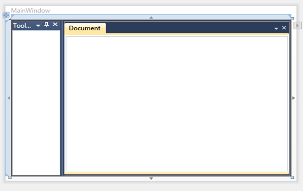

Styling can be applied to the Docking Manager control. This control supports the following styles:
1. Office2007Blue
2. Office2007Black
3. Office2007Silver
4. Office2010Blue
5. Office2010Black
6. Office2010Silver
7. Blend
8. VS2010
9. Metro
10. Transparent
These styles can be applied to the Docking Manager through XAML and C#. The VisualStyle property of SkinStorage class is used to set the visual styles for the child window of the Docking Manager. The following code examples illustrate how to apply VS2010 style to the Docking Manager control.
|
[XAML]
<syncfusion:DockingManager UseDocumentContainer="True" syncfusion:SkinStorage.VisualStyle="VS2010"> <ContentControl syncfusion:DockingManager.Header="ToolBox" syncfusion:DockingManager.SideInDockedMode="Left"/> <ContentControl syncfusion:DockingManager.Header="Document" syncfusion:DockingManager.State="Document" /> </syncfusion:DockingManager> |
|
[C#] DockingManager dockingManager1 = new DockingManager(); dockingManager1.UseDocumentContainer = true;
ContentControl ctrl1 = new ContentControl(); DockingManager.SetHeader(ctrl1, "Tool box"); DockingManager.SetSideInDockedMode(ctrl1, DockSide.Left); dockingManager1.Children.Add(ctrl1);
ContentControl ctrl3 = new ContentControl(); DockingManager.SetHeader(ctrl3, "Document"); DockingManager.SetState(ctrl3, DockState.Document); dockingManager1.Children.Add(ctrl3);
SkinStorage.SetVisualStyle(dockingManager1, "VS2010");
|
Implementing the above code will generate the following control.

Figure 307: Docking Manager with VS2010 style